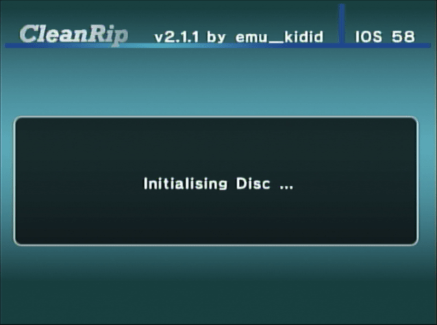
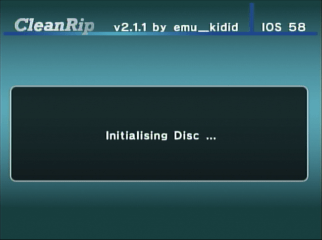

Wykonywanie kopii zapasowej gier z Wii/GameCube
Potrzebujesz pomocy po Polsku? Dołącz do serwera RiiConnect24 na Discord oraz poproś o pomoc po Polsku.
Chcesz wykonać kopię zapasową płyty z grą na Wii lub GameCube? W zależności od narzędzi jakimi dysponujesz, istnieją dwa sposoby aby to zrobić.
Poradnik CleanRip
Będziesz potrzebował:
- Karta pamięci lub dysk USB z conajmiej 4.7 GB wolnego miejsca (8.5GB jeśli gra jest dyskiem dwuwarstwowym).
- CleanRip
Instrukcje
Sekcja I - Pobieranie/Instalowanie
- Wypakuj CleanRip oraz skopiuj go do folderu
appsna Twojej karcie SD lub urządzeniu USB. - Podłącz Twoją kartę SD lub urządzenie USB do Twojego Wii oraz uruchom CleanRip korzystając z Homebrew Channel.
Sekcja II - Wykonywanie kopii zapasowej
- Wybierz urządzenie do którego zapiszesz kopię - twój Pendrive lub karta SD.

- Na tym ekranie, zostaniesz zapytany czy chcesz pobrać plik z sumami kontrolnymi gier której zaraz zrobisz kopię zapasową. Jeżeli chcesz, wybierz
Yes, jeżeli nie, wybierzNo- wybór należy do Ciebie.
- Teraz włóż płytę z grą której chcesz zrobić kopię.
 
 - Ustaw jak pokazano na ekranie poniżej.
title: “CleanRip”

- CleanRip wykona teraz kopię zapasową. To może potrwać chcilę ponieważ Twoje Wii wykona pełną kopię płyty która zajmie 4.7GB (9.4GB dla płyt dwuwarstwowych).

Wykonywanie kopii zapasowej gry poprzez siec lokalną
title: “Tworzenie kopii zapasowej gier Wii/GameCube przez sieć lokalną” —
Będziesz potrzebował
- Konsola Wii.
- Narzędzie DVD Dump
Twoje Wii oraz Twój komputer muszą być podłączone do jednej sieci lokalnej
Instrukcje
Sekcja I - Pobieranie/Instalowanie
- Wypakuj narzędzie DVD Dump (DVD Dump Tool) oraz skopiuj go do folderu
appsna Twojej karcie SD lub urządzeniu USB. - Podłącz Twoją kartę SD lub urządzenie USB do Twojego Wii oraz uruchom DVD Dump Tool korzystając z Homebrew Channel.
Sekcja II - Wykonywanie kopii zapasowej
- Naciśnij
prawona D-Padzie na kontrolerze oraz naciśnijA
- Wybierz typ płyty której wykonujesz kopię zapasową (opcje to:
GameCube Disc (Płyta GameCube),Wii Single-Layer Disc (Płyta Wii jednowarstwowa),Wii Dual-Layer Disc (Płyta Wii dwuwarstwowa)i naciśnijA
- Teraz, włóż płytę z grą do Twojego Wii. (Jeżeli gra już jest w Wii, wysuń ją i włóż spowrotem)


- Zapamiętaj adres Twojego Wii (Adres IP)

- W przeglądarce Internetowej na Twoim komputerze, w adres strony wpisz URL / Adres IP Twojego Wii oraz naciśnij ENTER.

- Powinieneś/Powinnaś zobaczyć to. Naciśnij na
Click here to download XXXX.iso(Naciśnij tutaj, żeby pobrać plik XXXX.iso)
- Prędkość przesyłania nie jest najszybsza ale jeżeli nie możesz użyć karty SD lub urządzenia USB, lepsze to niż nic.